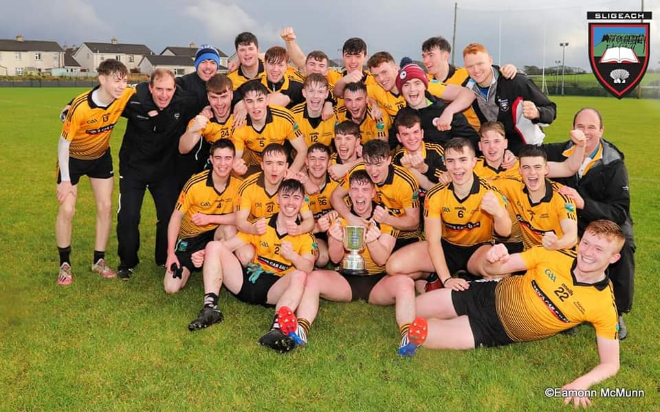
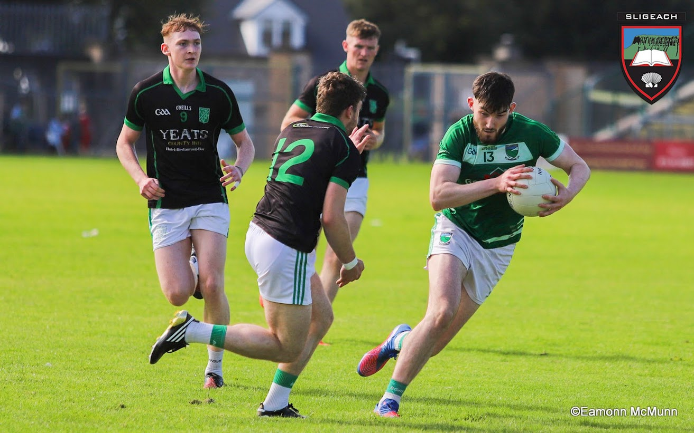
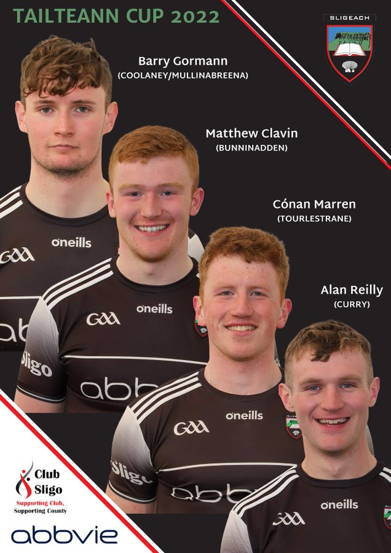
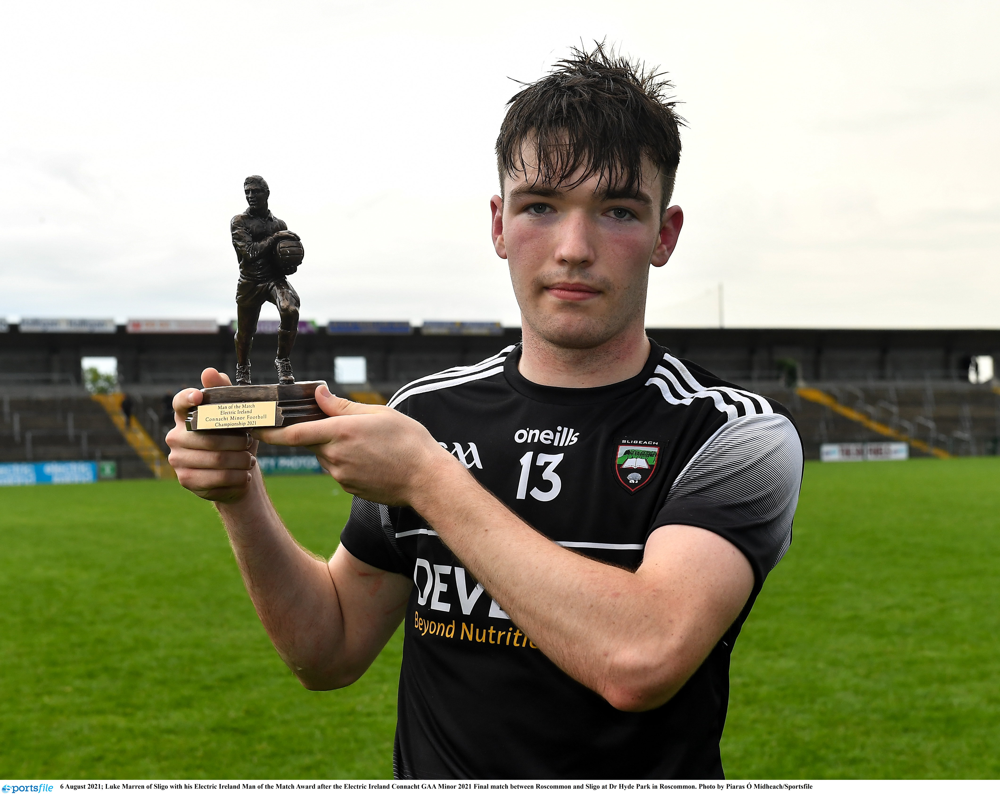
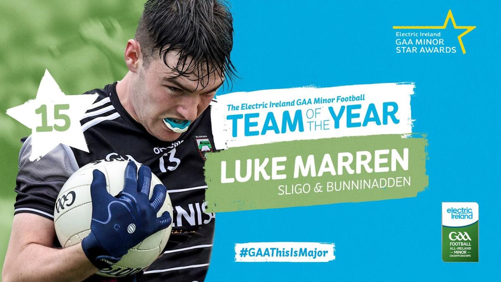
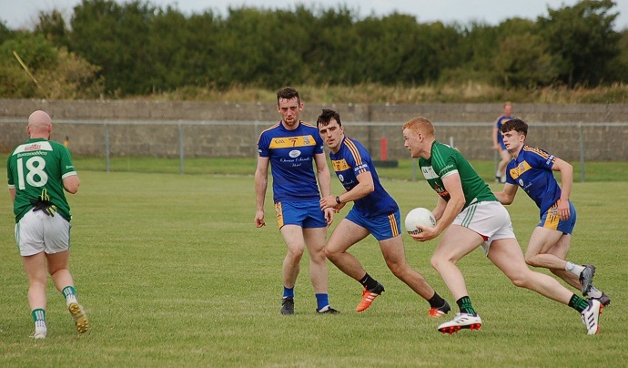
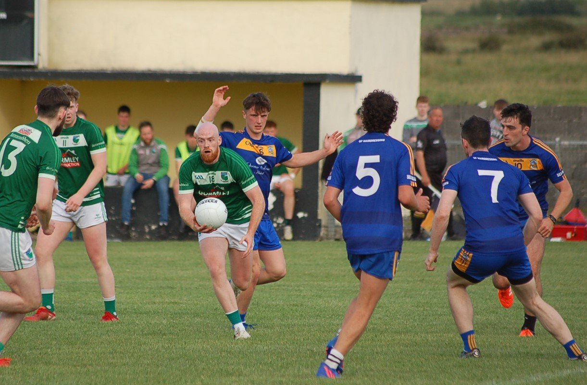
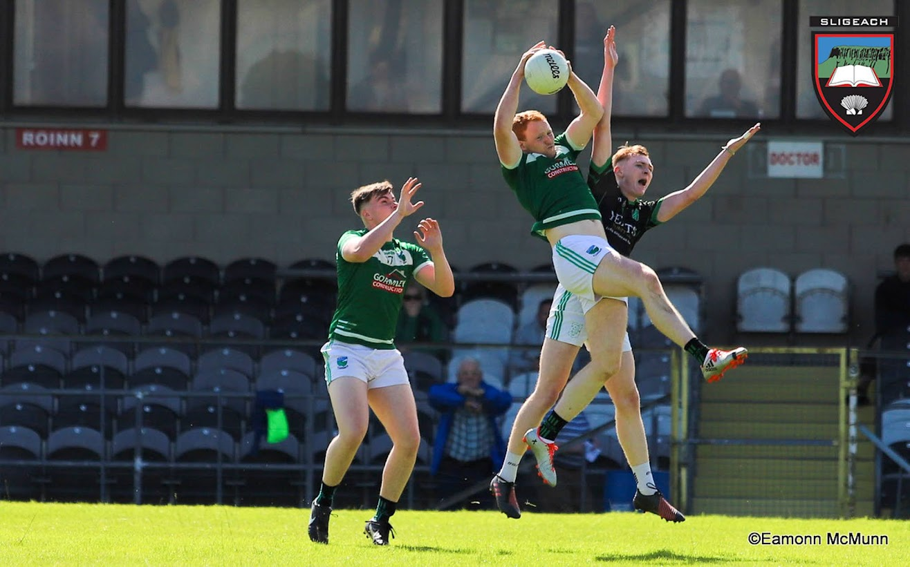
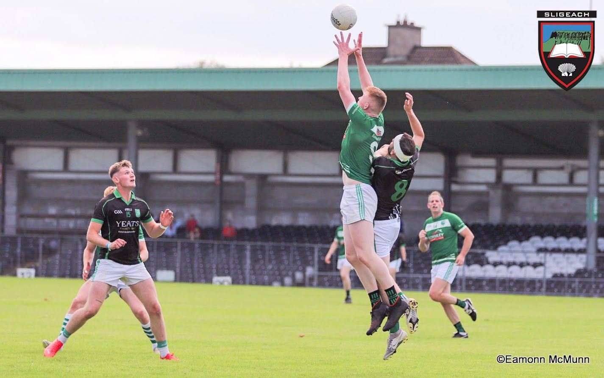
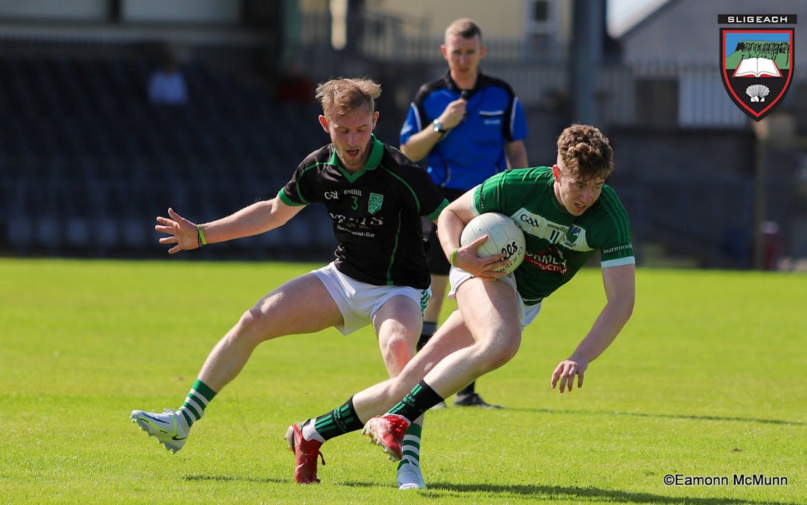

Adrian Frain - Media promotion 2022

U21 Bunninadden/ Ballymote team - final 2022

Barry Cafferkey - League final 2022

Matthew Clavin - Tailteann Cup Media 2022

Luke Marren - Electric Ireland Player of the year 2022

Luke Marren - Electric Ireland Player of the year 2022

Cian Brett & Adrian Frain - 2022

Barry Cafferkey & Cian Brett - 2022

Adrian Frain & Kyle Gormanly - League final 2022

Matthew Clavin - League final 2022

Oisin Gorman - League final 2022